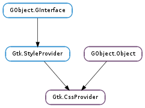

| static | get_default() |
| static | get_named(name, variant) |
| static | new() |
| load_from_data(data) | |
| load_from_file(file) | |
| load_from_path(path) | |
| to_string() |
None
| Name | Parameters | Return | Description |
|---|---|---|---|
| parsing-error | Gtk.CssSection, GLib.Error | Signals that a parsing error occured. the path, line and position describe the actual location of the error as accurately as possible. Parsing errors are never fatal, so the parsing will resume after the error. Errors may however cause parts of the given data or even all of it to not be parsed at all. So it is a useful idea to check that the parsing succeeds by connecting to this signal. Note that this signal may be emitted at any time as the css provider may opt to defer parsing parts or all of the input to a later time than when a loading function was called. |
| Name | Type | Access |
|---|---|---|
| parent_instance | GObject.Object | r |
Bases: GObject.Object, Gtk.StyleProvider
Gtk.CssProvider is an object implementing the Gtk.StyleProvider interface. It is able to parse CSS-like input in order to style widgets.
Default files
An application can cause GTK+ to parse a specific CSS style sheet by calling Gtk.CssProvider.load_from_file () and adding the provider with Gtk.StyleContext.add_provider () or Gtk.StyleContext.add_provider_for_screen (). In addition, certain files will be read when GTK+ is initialized. First, the file $XDG_CONFIG_HOME/gtk-3.0/gtk.css is loaded if it exists. Then, GTK+ tries to load $HOME/.themes/theme-name/gtk-3.0/gtk.css, falling back to datadir/share/themes/theme-name/gtk-3.0/gtk.css, where theme-name is the name of the current theme (see the Gtk.Settings :gtk-theme-name setting) and datadir is the prefix configured when GTK+ was compiled, unless overridden by the GTK_DATA_PREFIX environment variable.
Style sheets
The basic structure of the style sheets understood by this provider is a series of statements, which are either rule sets or '@-rules‘, separated by whitespace.
A rule set consists of a selector and a declaration block, which is a series of declarations enclosed in curly braces ({ and }). The declarations are separated by semicolons (;). Multiple selectors can share the same declaration block, by putting all the separators in front of the block, separated by commas.
A rule set with two selectors
GtkButton, GtkEntry {
color: &numff00ea;
font: Comic Sans 12
}
Selectors
Selectors work very similar to the way they do in CSS, with widget class names taking the role of element names, and widget names taking the role of IDs. When used in a selector, widget names must be prefixed with a ‘&num’ character. The ‘*’ character represents the so-called universal selector, which matches any widget.
To express more complicated situations, selectors can be combined in various ways:
Widget classes and names in selectors
/&ast Theme labels that are descendants of a window &ast/
GtkWindow GtkLabel {
background-color: &num898989
}
/&ast Theme notebooks, and anything that's within these &ast/
GtkNotebook {
background-color: &numa939f0
}
/&ast Theme combo boxes, and entries that
are direct children of a notebook &ast/
GtkComboBox,
GtkNotebook > GtkEntry {
color: @fg_color;
background-color: &num1209a2
}
/&ast Theme any widget within a GtkBin &ast/
GtkBin * {
font: Sans 20
}
/&ast Theme a label named title-label &ast/
GtkLabel&numtitle-label {
font: Sans 15
}
/&ast Theme any widget named main-entry &ast/
&nummain-entry {
background-color: &numf0a810
}
Widgets may also define style classes, which can be used for matching. When used in a selector, style classes must be prefixed with a ‘.’ character.
Refer to the documentation of individual widgets to learn which style classes they define and see for a list of all style classes used by GTK+ widgets.
Note that there is some ambiguity in the selector syntax when it comes to differentiation widget class names from regions. GTK+ currently treats a string as a widget class name if it contains any uppercase characters (which should work for more widgets with names like Gtk.Label ).
Style classes in selectors
/&ast Theme all widgets defining the class entry &ast/
.entry {
color: &num39f1f9;
}
/&ast Theme spinbuttons' entry &ast/
GtkSpinButton.entry {
color: &num900185
}
In complicated widgets like e.g. a Gtk.Notebook, it may be desirable to style different parts of the widget differently. To make this possible, container widgets may define regions, whose names may be used for matching in selectors.
Some containers allow to further differentiate between regions by applying so-called pseudo-classes to the region. For example, the tab region in Gtk.Notebook allows to single out the first or last tab by using the :first-child or :last-child pseudo-class. When used in selectors, pseudo-classes must be prefixed with a ‘:’ character.
Refer to the documentation of individual widgets to learn which regions and pseudo-classes they define and see for a list of all regions used by GTK+ widgets.
Regions in selectors
/&ast Theme any label within a notebook &ast/
GtkNotebook GtkLabel {
color: &numf90192;
}
/&ast Theme labels within notebook tabs &ast/
GtkNotebook tab GtkLabel {
color: &num703910;
}
/&ast Theme labels in the any first notebook
tab, both selectors are equivalent &ast/
GtkNotebook tab:nth-child(first) GtkLabel,
GtkNotebook tab:first-child GtkLabel {
color: &num89d012;
}
Another use of pseudo-classes is to match widgets depending on their state. This is conceptually similar to the :hover, :active or :focus pseudo-classes in CSS. The available pseudo-classes for widget states are :active, :prelight (or :hover ), :insensitive, :selected, :focused and :inconsistent.
Styling specific widget states
/&ast Theme active (pressed) buttons &ast/
GtkButton:active {
background-color: &num0274d9;
}
/&ast Theme buttons with the mouse pointer on it,
both are equivalent &ast/
GtkButton:hover,
GtkButton:prelight {
background-color: &num3085a9;
}
/&ast Theme insensitive widgets, both are equivalent &ast/
:insensitive,
*:insensitive {
background-color: &num320a91;
}
/&ast Theme selection colors in entries &ast/
GtkEntry:selected {
background-color: &num56f9a0;
}
/&ast Theme focused labels &ast/
GtkLabel:focused {
background-color: &numb4940f;
}
/&ast Theme inconsistent checkbuttons &ast/
GtkCheckButton:inconsistent {
background-color: &num20395a;
}
Widget state pseudoclasses may only apply to the last element in a selector.
To determine the effective style for a widget, all the matching rule sets are merged. As in CSS, rules apply by specificity, so the rules whose selectors more closely match a widget path will take precedence over the others.
&commat Rules
GTK+’s CSS supports the &commatimport rule, in order to load another CSS style sheet in addition to the currently parsed one.
Using the &commatimport rule &commatimport url ("path/to/common.css");
In order to extend key bindings affecting different widgets, GTK+ supports the &commatbinding-set rule to parse a set of bind/unbind directives, see Gtk.BindingSet for the supported syntax. Note that the binding sets defined in this way must be associated with rule sets by setting the gtk-key-bindings style property.
Customized key bindings are typically defined in a separate gtk-keys.css CSS file and GTK+ loads this file according to the current key theme, which is defined by the Gtk.Settings :gtk-key-theme-name setting.
Using the &commatbinding rule
&commatbinding-set binding-set1 {
bind "<alt>Left" { "move-cursor" (visual-positions, -3, 0) };
unbind "End";
};
&commatbinding-set binding-set2 {
bind "<alt>Right" { "move-cursor" (visual-positions, 3, 0) };
bind "<alt>KP_space" { "delete-from-cursor" (whitespace, 1)
"insert-at-cursor" (" ") };
};
GtkEntry {
gtk-key-bindings: binding-set1, binding-set2;
}
GTK+ also supports an additional &commatdefine-color rule, in order to define a color name which may be used instead of color numeric representations. Also see the Gtk.Settings :gtk-color-scheme setting for a way to override the values of these named colors.
Defining colors
&commatdefine-color bg_color &numf9a039;
&ast {
background-color: &commatbg_color;
}
Symbolic colors
Besides being able to define color names, the CSS parser is also able to read different color expressions, which can also be nested, providing a rich language to define colors which are derived from a set of base colors.
Using symbolic colors
&commatdefine-color entry-color shade (&commatbg_color, 0.7);
GtkEntry {
background-color: @entry-color;
}
GtkEntry:focused {
background-color: mix (&commatentry-color,
shade (&numfff, 0.5),
0.8);
}
The various ways to express colors in GTK+ CSS are:
Syntax Explanation Examples
rgb(r, g, b ) An opaque color; r, g, b can be either integers between 0 and 255 or percentages rgb(128, 10, 54) rgb(20%, 30%, 0%)
rgba(r, g, b, a ) A translucent color; r, g, b are as in the previous row, a is a floating point number between 0 and 1 rgba(255, 255, 0, 0.5)
&num@xxyyzz An opaque color; xx, yy, zz are hexadecimal numbers specifying r, g, b variants with between 1 and 4 hexadecimal digits per component are allowed &numff12ab &numf0c
&commatname Reference to a color that has been defined with &commatdefine-color
&commatbg_color
mix(color1, color2, f ) A linear combination of color1 and color2. f is a floating point number between 0 and 1. mix(&numff1e0a, &commatbg_color, 0.8)
shade(color, f ) A lighter or darker variant of color. f is a floating point number.
shade(&commatfg_color, 0.5)
lighter(color ) A lighter variant of color
darker(color ) A darker variant of color
alpha(color, f ) Modifies passed color’s alpha by a factor f. f is a floating point number. f < 1.0 results in a more transparent color while f > 1.0 results in a more opaque color.
alhpa(blue, 0.5)
Gradients
Linear or radial Gradients can be used as background images.
A linear gradient along the line from (start_x, start_y ) to (end_x, end_y ) is specified using the syntax -gtk-gradient (linear, start_x start_y, end_x end_y, color-stop (position, color ), ...) where start_x and end_x can be either a floating point number between 0 and 1 or one of the special values ‘left’, ‘right’ or ‘center’, start_y and end_y can be either a floating point number between 0 and 1 or one of the special values ‘top’, ‘bottom’ or ‘center’, position is a floating point number between 0 and 1 and color is a color expression (see above). The color-stop can be repeated multiple times to add more than one color stop. ‘from (color )’ and ‘to (color )’ can be used as abbreviations for color stops with position 0 and 1, respectively.
A linear gradient
This gradient was specified with -gtk-gradient (linear, left top, right bottom, from(&commatyellow), to(&commatblue))
Another linear gradient
This gradient was specified with -gtk-gradient (linear, 0 0, 0 1, color-stop(0, &commatyellow), color-stop(0.2, &commatblue), color-stop(1, &num0f0))
A radial gradient along the two circles defined by (start_x, start_y, start_radius ) and (end_x, end_y, end_radius ) is specified using the syntax -gtk-gradient (radial, start_x start_y, start_radius, end_x end_y, end_radius, color-stop (position, color ), ...) where start_radius and end_radius are floating point numbers and the other parameters are as before.
A radial gradient
This gradient was specified with -gtk-gradient (radial, center center, 0, center center, 1, from(&commatyellow), to(&commatgreen))
Another radial gradient
This gradient was specified with -gtk-gradient (radial, 0.4 0.4, 0.1, 0.6 0.6, 0.7, color-stop (0, &numf00), color-stop (0.1, &numa0f), color-stop (0.2, &commatyellow), color-stop (1, &commatgreen))
Text shadow
A shadow list can be applied to text or symbolic icons, using the CSS3 text-shadow syntax, as defined in the CSS3 specification.
A text shadow is specified using the syntax text-shadow: horizontal_offset vertical_offset [ blur_radius ] color The offset of the shadow is specified with the horizontal_offset and vertical_offset parameters. The optional blur radius is parsed, but it is currently not rendered by the GTK+ theming engine.
To set a shadow on an icon, use the icon-shadow property instead, with the same syntax.
To set multiple shadows on an element, you can specify a comma-separated list of shadow elements in the text-shadow or icon-shadow property. Shadows are always rendered front-back, i.e. the first shadow specified is on top of the others. Shadows can thus overlay each other, but they can never overlay the text or icon itself, which is always rendered on top of the shadow layer.
Box shadow
Themes can apply shadows on framed elements using the CSS3 box-shadow syntax, as defined in the CSS3 specification.
A box shadow is specified using the syntax box-shadow: [ inset ] horizontal_offset vertical_offset [ blur_radius ] [ spread ] color A positive offset will draw a shadow that is offset to the right (down) of the box, a negative offset to the left (top). The optional spread parameter defines an additional distance to expand the shadow shape in all directions, by the specified radius. The optional blur radius parameter is parsed, but it is currently not rendered by the GTK+ theming engine. The inset parameter defines whether the drop shadow should be rendered inside or outside the box canvas.
To set multiple box-shadows on an element, you can specify a comma-separated list of shadow elements in the box-shadow property. Shadows are always rendered front-back, i.e. the first shadow specified is on top of the others, so they may overlap other boxes or other shadows.
Border images
Images and gradients can also be used in slices for the purpose of creating scalable borders. For more information, see the CSS3 documentation for the border-image property, which can be found here.
The parameters of the slicing process are controlled by four separate properties. Note that you can use the border-image shorthand property to set values for the three properties at the same time.
border-image-source: url(path ) (or border-image-source: -gtk-gradient(...)): Specifies the source of the border image, and it can either be an URL or a gradient (see above).
border-image-slice: top right bottom left The sizes specified by the top, right, bottom and left parameters are the offsets, in pixels, from the relevant edge where the image should be “cut off” to build the slices used for the rendering of the border.
border-image-width: top right bottom left The sizes specified by the top, right, bottom and left parameters are inward distances from the border box edge, used to specify the rendered size of each slice determined by border-image-slice. If this property is not specified, the values of border-width will be used as a fallback.
border-image-repeat: [stretch|repeat|round|space] ? [stretch|repeat|round|space] Specifies how the image slices should be rendered in the area outlined by border-width. The default (stretch) is to resize the slice to fill in the whole allocated area. If the value of this property is ‘repeat’, the image slice will be tiled to fill the area. If the value of this property is ‘round’, the image slice will be tiled to fill the area, and scaled to fit it exactly a whole number of times. If the value of this property is ‘space’, the image slice will be tiled to fill the area, and if it doesn’t fit it exactly a whole number of times, the extra space is distributed as padding around the slices. If two options are specified, the first one affects the horizontal behaviour and the second one the vertical behaviour. If only one option is specified, it affects both.
A border image
This border image was specified with url(“gradient1.png”) 10 10 10 10
A repeating border image
This border image was specified with url(“gradient1.png”) 10 10 10 10 repeat
A stretched border image
This border image was specified with url(“gradient1.png”) 10 10 10 10 stretch
Styles can specify transitions that will be used to create a gradual change in the appearance when a widget state changes. The following syntax is used to specify transitions: duration [s|ms] [linear|ease|ease-in|ease-out|ease-in-out] [loop]? The duration is the amount of time that the animation will take for a complete cycle from start to end. If the loop option is given, the animation will be repated until the state changes again. The option after the duration determines the transition function from a small set of predefined functions. Linear transition
Ease transition
Ease-in-out transition
Ease-in transition
Ease-out transition
Supported properties
Properties are the part that differ the most to common CSS, not all properties are supported (some are planned to be supported eventually, some others are meaningless or don’t map intuitively in a widget based environment).
The currently supported properties are:
Property name Syntax Maps to Examples
engine engine-name Gtk.ThemingEngine engine: clearlooks; engine: none; /&ast use the default (i.e. builtin) engine) &ast/
background-color color (see above) Gdk.RGBA background-color: &numfff; color: &color1; background-color: shade (&color1, 0.5); color: mix (&color1, &numf0f, 0.8);
color
border-top-color transparent|color (see above)
border-right-color
border-bottom-color
border-left-color
border-color [transparent|color]{1,4}
font-family family [, family ]* #gchararray font-family: Sans, Arial;
font-style [normal|oblique|italic] #PANGO_TYPE_STYLE font-style: italic;
font-variant [normal|small-caps] #PANGO_TYPE_VARIANT font-variant: normal;
font-weight [normal|bold|bolder|lighter|100|200|300|400|500|600|700|800|900] #PANGO_TYPE_WEIGHT font-weight: bold;
font-size Font size in point int font-size: 13;
font family [@style] [@size] Pango.FontDescription font: Sans 15;
margin-top integer int margin-top: 0;
margin-left integer int margin-left: 1;
margin-bottom integer int margin-bottom: 2;
margin-right integer int margin-right: 4;
margin width vertical_width horizontal_width top_width horizontal_width bottom_width top_width right_width bottom_width left_width
Gtk.Border margin: 5; margin: 5 10; margin: 5 10 3; margin: 5 10 3 5;
padding-top integer int padding-top: 5;
padding-left integer int padding-left: 5;
padding-bottom integer int padding-bottom: 5;
padding-right integer int padding-right: 5;
padding
background-image gradient (see above) or url(path ) cairo.Pattern -gtk-gradient (linear, left top, right top, from (&numfff), to (&num000)); -gtk-gradient (linear, 0.0 0.5, 0.5 1.0, from (&numfff), color-stop (0.5, &numf00), to (&num000)); -gtk-gradient (radial, center center, 0.2, center center, 0.8, color-stop (0.0, &numfff), color-stop (1.0, &num000)); url (‘background.png’);
background-repeat [repeat|no-repeat] internal background-repeat: no-repeat; If not specified, the style doesn’t respect the CSS3 specification, since the background will be stretched to fill the area.
border-top-width integer int border-top-width: 5;
border-left-width integer int border-left-width: 5;
border-bottom-width integer int border-bottom-width: 5;
border-right-width integer int border-right-width: 5;
border-width Gtk.Border border-width: 1; border-width: 1 2; border-width: 1 2 3; border-width: 1 2 3 5;
border-radius integer int border-radius: 5;
border-style [none|solid|inset|outset] Gtk.BorderStyle border-style: solid;
border-image border image (see above) internal use only border-image: url(“/path/to/image.png”) 3 4 3 4 stretch; border-image: url(“/path/to/image.png”) 3 4 4 3 repeat stretch;
text-shadow shadow list (see above) internal use only text-shadow: 1 1 0 blue, -4 -4 red;
transition transition (see above) internal use only transition: 150ms ease-in-out; transition: 1s linear loop;
gtk-key-bindings binding set name list internal use only gtk-bindings: binding1, binding2, ...;
GtkThemingEngines can register their own, engine-specific style properties with the function Gtk.ThemingEngine.register_property (). These properties can be set in CSS like other properties, using a name of the form -namespace-name, where namespace is typically the name of the theming engine, and name is the name of the property. Style properties that have been registered by widgets using Gtk.WidgetClass.install_style_property () can also be set in this way, using the widget class name for namespace.
Using engine-specific style properties
* {
engine: clearlooks;
border-radius: 4;
-GtkPaned-handle-size: 6;
-clearlooks-colorize-scrollbar: false;
}
| Returns: | The provider used for fallback styling. This memory is owned by GTK+, and you must not free it. |
|---|---|
| Return type: | Gtk.CssProvider |
Returns the provider containing the style settings used as a fallback for all widgets.
| Parameters: | |
|---|---|
| Returns: | a Gtk.CssProvider with the theme loaded. This memory is owned by GTK+, and you must not free it. |
| Return type: |
Loads a theme from the usual theme paths
| Returns: | A new Gtk.CssProvider |
|---|---|
| Return type: | Gtk.CssProvider |
Returns a newly created Gtk.CssProvider.
| Parameters: | data ([int]) – CSS data loaded in memory |
|---|---|
| Raises: | GLib.GError |
| Returns: | True. The return value is deprecated and False will only be returned for backwards compatibility reasons if an error is not None and a loading error occured. To track errors while loading CSS, connect to the Gtk.CssProvider ::parsing-error signal. |
| Return type: | bool |
Loads data into css_provider, making it clear any previously loaded information.
| Parameters: | file (Gio.File) – Gio.File pointing to a file to load |
|---|---|
| Raises: | GLib.GError |
| Returns: | True. The return value is deprecated and False will only be returned for backwards compatibility reasons if an error is not None and a loading error occured. To track errors while loading CSS, connect to the Gtk.CssProvider ::parsing-error signal. |
| Return type: | bool |
Loads the data contained in file into css_provider, making it clear any previously loaded information.
| Parameters: | path (str) – the path of a filename to load, in the GLib filename encoding |
|---|---|
| Raises: | GLib.GError |
| Returns: | True. The return value is deprecated and False will only be returned for backwards compatibility reasons if an error is not None and a loading error occured. To track errors while loading CSS, connect to the Gtk.CssProvider ::parsing-error signal. |
| Return type: | bool |
Loads the data contained in path into css_provider, making it clear any previously loaded information.
| Returns: | a new string representing the provider. |
|---|---|
| Return type: | str |
Convertes the provider into a string representation in CSS format.
Using Gtk.CssProvider.load_from_data () with the return value from this function on a new provider created with Gtk.CssProvider.new () will basicallu create a duplicate of this provider.